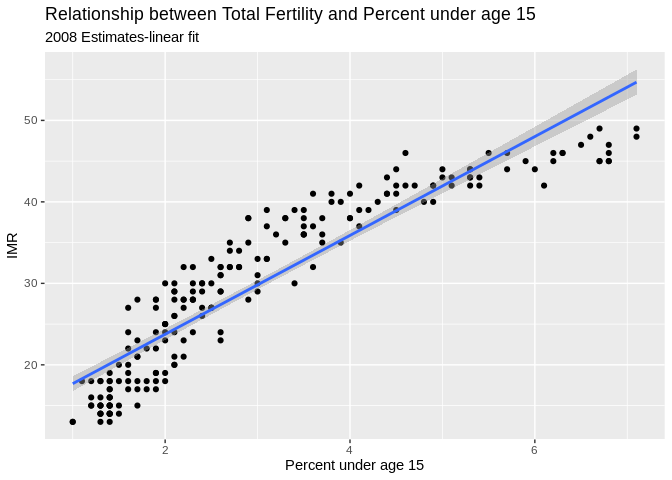
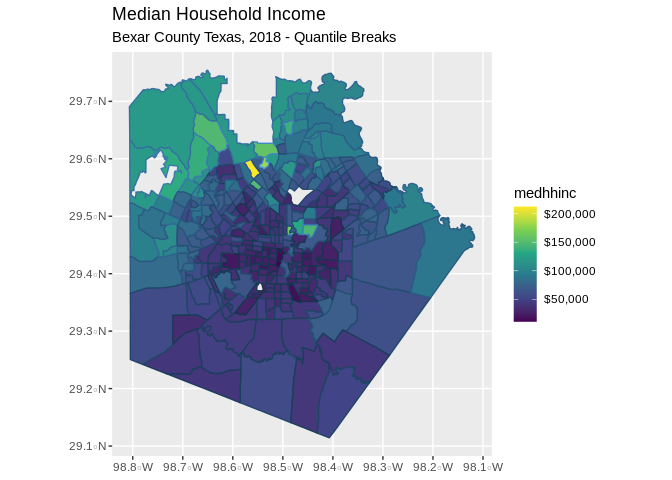

Welcome to R.
R is an interpreted languages, not a compiled one. This means, you type something into R and it does it.
If you’re coming to R from SAS, there is no data step. There are no procs. The SAS and R book is very useful for going between the two programs.
If you’re coming from SPSS and you’ve been using the button clicking method, be prepared for a steep learning curve. If you’ve been writing syntax in SPSS, you’re at least used to having to code. There’s a good book for SAS and SPSS users by Bob Meunchen at the Univ. of Tennessee here, which may be of some help.
R and Rstudio
The Rgui is the base version of R, but is not very good to program in. Rstudio is much better, as it gives you a true integrated development environment (IDE), where you can write code in on window, see results in others, see locations of files, see objects you’ve created
Installation
Download R from CRAN If you’re on Windows, I would also install Rtools, becuase it gives you compilers
I highly recommend Rstudio for an integrated development environment for R. Download that here
R file types
.R files R uses a basic script file with the .R extension. This type of file is useful if you’re going to write a function or do some analysis and don’t want to have formatted output or text.
.Rmd files Rstudio uses a form of the markdown formatting language, called Rmarkdown, for creating formatted documents that include code chunks, tables, figures and statistical output. This entire example is written in Rmarkdown!
Rmarkdown is nice for lots of reasons, such as the ability to insert latex equations into documents
\[y_i \sim Normal (x` \beta, \sigma_2)\] or to include output tables directly into a document:
Quitting from lines 45-53 (summer2020_r_intro.Rmd)
without having to make tables in Word or some other program. You can basically do your entire analysis and slideshow or paper write up, including bibliography in Rstudio.
Getting help in R
I wish I had a nickel for every time I ran into a problem trying to do something in R, that would be a lot of nickles. Here are some good tips for finding help:
- If you know the name of a function you want to use, but just need help using it, try
?
?lm
- If you need to find a function to do something, try
??
??"linear model"
- If you want to search among other R users’ questions to the R list serve, try
RSiteSearch()
RSiteSearch("heteroskedasticity")
Speaking of which, there are multiple R user email list serves that you can ask questions on, but they typically want an example of what you’re trying to do. I wish I also had nickles for each question I’ve asked and answered on these forums.
A good source for all things programming is the statistics branch of Stack Exchange, which has lots of contributed questions and answers, although many answers are either very snarky or wrong or for an old version of a library, so caveat emptor.
Your local R guru or R user group UTSA is
Using R
Getting around in R
When you begin an R session (open R) you will begin in your home directory. This is traditionally on Windows at ‘C:/Users/yourusername/Documents’ and on Mac, is ‘/Users/yourusername’.
If you’re not sure where you are you can type getwd(), for get working directory, and R will tell you:
## [1] "/home/corey/blog/_knitr"If you don’t like where you start, you can change it, by using setwd(), to set your working directory to a new location.
R libraries
R uses libraries to do different types of analysis, so we will need to install lots of different libraries to do different things. There are around 10,000 different packages currently for R. These are also organized into Task Views, where packages are organized into thematic areas.
Libraries/packages need to be downloaded from the internet, using the install.packages() command. You only need to install a package once. E.g.
install.packages("car")
will install the car library. To use the functions within it, type
library(car)
Now you have access to those functions. You don’t need to install the package again, unless you update your R software.
I strongly recommend you install several packages prior to us beginning. I’ve written a short script on Github you can use it by running:
This will install a few dozen R packages that are commonly used for social science analysis.
R examples
Below we will go through a simple R session where we introduce some concepts that are important for R.
R is a calculator
## [1] 10## [1] -4## [1] 21## [1] 0.4285714## [1] 9## [1] 27## [1] -0.8472979## [1] 1.535063## [1] 0.4155719## [1] 55.9017Variables and objects
In R we assign values to objects (object-oriented programming). These can generally have any name, but some names are reserved for R. For instance you probably wouldn’t want to call something ‘mean’ because there’s a ‘mean()’ function already in R. For instance:
## [1] 10## [1] 21## [1] 3.044522vectors
R thinks everything is a matrix, or a vector, meaning a row or column of numbers, or characters. One of R’s big selling points is that much of it is completely vectorized. Meaning, I can apply an operation along all elements of a vector without having to write a loop. For example, if I want to multiply a vector of numbers by a constant, in SAS, I could do:
for (i in 1 to 5) x[i]<-y[i]*5 end
but in R, I can just do:
## [1] 21 28 35 42 49R is also very good about using vectors, let’s say I wanted to find the third element of x:
## [1] 5## [1] FALSE## [1] TRUE## [1] TRUE## [1] FALSE TRUE TRUE TRUE TRUEIf you want to see what’s in an object, use str(), for structure
## num [1:5] 3 4 5 6 7and we see that x is numeric, and has those values.
We can also see different characteristics of x
## [1] 5## [1] TRUE## [1] FALSE## [1] FALSE FALSE FALSE FALSE FALSE## [1] 3 4 5 6 7 NA## [1] FALSE FALSE FALSE FALSE FALSE TRUEreplacing elements of vectors
Above, we had a missing value in X, let’s say we want to replace it with another value:
## [1] 3.000000 4.000000 5.000000 6.000000 7.000000 2.683282Done!
Dataframes
Traditionally, R organizes variables into data frames, these are like a spreadsheet. The columns can have names, and the dataframe itself can have data of different types. Here we make a short data frame with three columns, two numeric and one character:
mydat<-data.frame(
x=c(1,2,3,4,5),
y=c(10, 20, 35, 57, 37),
group=c("A", "A" ,"A", "B", "B")
)
#See the size of the dataframe
dim(mydat)## [1] 5 3## [1] 5| x | y | group |
|---|---|---|
| 1 | 10 | A |
| 2 | 20 | A |
| 3 | 35 | A |
| 4 | 57 | B |
| 5 | 37 | B |
## x y group
## 1 1 10 A
## 2 2 20 A
## 3 3 35 A
## 4 4 57 B
## 5 5 37 BReal data
Now let’s open a ‘real’ data file. This is the 2008 World population data sheet from the Population Reference Bureau. It contains summary information on many demographic and population level characteristics of nations around the world in 2008.
I’ve had this entered into a Comma Separated Values file by some poor previous GRA of mine and it lives happily on Github now for all the world to see. CSV files are a good way to store data coming out of a spreadsheet. R can read Excel files, but it digests text files easier. Save something from Excel as CSV.
I can read it from github directly by using a function in the readr library:
That’s handy. If the file lived on our computer, I could read it in like so: note, please make a folder on your computer so you can store things for this class in a single location!!!! Organization is Key to Success in Graduate School
## Parsed with column specification:
## cols(
## .default = col_double(),
## Country = col_character(),
## Continent = col_character(),
## Region = col_character()
## )## See spec(...) for full column specifications.Same result.
The haven library can read files from other statistical packages easily, so if you have data in Stata, SAS or SPSS, you can read it into R using those functions, for example, the read_dta() function reads stata files, read_sav() to read spss data files.
I would not recommend you store data in Excel files for many reasons, but if you do, save the files as a CSV file and use the read_csv() function above to read it in.
library(haven)
prb_stata<-read_dta("~/git_area//r_courses/prb2008.dta")
prb_spss<-read_sav("~/git_area//r_courses/prb_2008.sav")Don’t know what a function’s called use ??
??stata ??csv
and Rstudio will show you a list of functions that have these strings in them.
What if you know the function name, like read_csv() but you want to see all the function arguments?
?read_csv
will open up the help file for that specific function
Save a file
Want to save something as a R data file? Use save()
If you have an R data file, use load() to open it:
Descriptive analysis
Let’s have a look at some descriptive information about the data:
##
## Africa Asia Europe North America Oceania
## 56 51 45 27 17
## South America
## 13## Min. 1st Qu. Median Mean 3rd Qu. Max. NA's
## 1.000 1.775 2.500 3.032 4.000 7.100 1From this summary, we see that the mean is 3.023, there is one country missing the Total fertility rate variable. The minimum is 1 and the maximum is 7.1 children per woman.
Now, we will cover some basic descriptive statistical analysis. We will describe measures of central tendency and variability and how these are affected by outliers in our data.
Really Real data example
Now let’s open a ‘really real’ data file. This is a sample from the 2015 1-year American Community Survey microdata, meaning that each row in these data is a person who responded to the survey in 2015. I get these, and you should too from the Minnesota Population Center IPUMS data. The IPUMS stands for “Integrated Public Use Microdata Series”, and consists of individual person responses to decennial census returns going back to 1850, and the American Community Survey data from 2001 to the present.
I’m using data from the US, but there is an IPUMS International data series too, which has data from 85 countries and over 300 censuses.
I’ve done an extract (do example in class) and stored the data in a R data (.Rdata) format on my github data site. The file we are using is called census.Rdata. This extract is small by demographic data standards and is only about 300,000 people.
There is also a codebook that describes the data and all the response levels for each variable in the data. They are also on my github data page, and called Codebook_census_data.
I can read it from my github repository directly by using the load() function combined with the url() function, to tell R that the file is on the web. If the file were, say, in my documents folder, I could likewise load the data from disk.
load(file=url("https://github.com/coreysparks/r_courses/blob/master/census_data.Rdata?raw=true"))
#from disk
#load("C:/Users/ozd504/Documents/census_data.Rdata")
#print the column names
names(census) ## [1] "year" "datanum" "serial" "hhwt" "statefip" "met2013"
## [7] "puma" "gq" "pernum" "perwt" "famsize" "nchild"
## [13] "nchlt5" "eldch" "nsibs" "relate" "related" "sex"
## [19] "age" "marst" "birthyr" "fertyr" "race" "raced"
## [25] "hispan" "hispand" "bpl" "bpld" "citizen" "yrsusa1"
## [31] "language" "languaged" "speakeng" "educ" "educd" "empstat"
## [37] "empstatd" "labforce" "occ" "ind" "inctot" "incwage"
## [43] "poverty" "hwsei" "migrate1" "migrate1d" "carpool" "trantime"Tidyverse
The tidyverse is a suite of packages in R to promote literate programming.
The dplyr library is a portion of a suite of libraries known as the tidyverse, which are oriented towards reproducible, intelligible coding for data science. There are too many things within the tidyverse to cover them all here, but I will introduce you to two aspects: 1) dplyr verbs and pipes 2) the ggplot2 library for producing graphs
Basic tidyverse verbs
The dplyr library has many verbs (action words) that are used to do various things. The neat thing about dplyr is it allows you to tell R what data source you want to do something to at the top of a pipe, then you can execute as many verbs as you need within the pipe without referring to the dataset by name again.
For instance, in the census data, let’s say we want to calculate the median income for adult, men and women who are in the labor force, in Texas. Sounds easy, right? In base R we would have to do some subsetting of the data first ( to limit our analysis to adults, in the labor force, who live in Texas), then use another function to calculate the median income for men and women.
dplyr allows us to do this in one fell swoop of code. We will use a few verbs, notably filter() to subset our cases, based on the conditions we describe, mutate() to recode our income variable, group_by() to let R know that the summaries we want will be for specific groups and summarise() to calculate the numeric summaries we want.
Now, most variables in the IPUMS can’t be used out of the box. For example open the pdf codebook and find the variable “incwage”, which is person’s income from wages in the previous year.
We are specifically wanting to pay attention to the “Coder Instructions” you’re the coder. Notice two codes (values) that are of special note. Specific Variable Codes 999999 = N/A and 999998=Missing. So if we want to use this variable, we need to do a basic recode of these values to tell R that they represent missing values.
Pipes
The second thing we need to know about are pipes. Pipes can be used to chain together verbs so that the code executes on the same dataset in sequence. They are identified by a %>% at the end of each verb statement. Here’s our example in action:
##
## Attaching package: 'dplyr'## The following objects are masked from 'package:stats':
##
## filter, lag## The following objects are masked from 'package:base':
##
## intersect, setdiff, setequal, unioncensus%>%
filter(age>18, statefip==48, labforce==2)%>%
mutate(newwage= ifelse(incwage%in%c(999998,999999), NA, incwage),
newsex=ifelse(sex==1, "male", "female" ))%>%
group_by(newsex)%>%
summarise(med_income= median(newwage, na.rm=T))## `summarise()` ungrouping output (override with `.groups` argument)## # A tibble: 2 x 2
## newsex med_income
## <chr> <dbl>
## 1 female 26100
## 2 male 38000and we see a difference of about $12,000 between men and women in Texas.
Notice in the code above, I did two three different filters in a single filter() statement and two recodes in a single mutate() statement, this is totally legal, and in general you can do several operations within a single verb statement. Otherwise I would have to do:
census%>%
filter(age>18)%>%
filter(statefip==48)%>%
filter(labforce==2)%>%
mutate(newwage= ifelse(incwage%in%c(999998,999999), NA, incwage))%>%
mutate(newsex=ifelse(sex==1, "male", "female" ))%>%
group_by(newsex)%>%
summarise(med_income= median(newwage, na.rm=T))## `summarise()` ungrouping output (override with `.groups` argument)## # A tibble: 2 x 2
## newsex med_income
## <chr> <dbl>
## 1 female 26100
## 2 male 38000So we get to the same place. It’s up to you which way you do it, always go with the route that you understand better and that is more readable and explicable to someone else.
I always say that in R, there’s always more than one way to do anything!
We could also see how incomes are different in San Antonio (variable met2013==41700) compared to Dallas (variable met2013==19100).
census%>%
filter(labforce==2, met2013%in%c(41700, 19100), age>18) %>%
mutate(newwage= ifelse(incwage%in%c(999998,999999), NA, incwage),
sexrecode=ifelse(sex==1, "male", "female"),
city=ifelse(met2013==41700, "San Antonio", "Dallas")) %>%
group_by(sexrecode, city)%>%
summarise(med_income=median(newwage, na.rm=T), n=n())## `summarise()` regrouping output by 'sexrecode' (override with `.groups` argument)## # A tibble: 4 x 4
## # Groups: sexrecode [2]
## sexrecode city med_income n
## <chr> <chr> <dbl> <int>
## 1 female Dallas 32000 1437
## 2 female San Antonio 25000 424
## 3 male Dallas 40000 1744
## 4 male San Antonio 36000 466So, we see that men in Dallas make about $4000 more than men in San Antonio, and women in Dallas make about $7000 more than women in San Antonio
Basic ggplot()
Let’s say that we want to compare the distributions of income from the above examples graphically. Since the ggplot2 library is part of the tidyverse, it integrates directly with dplyr and we can do plots within pipes too.
In generally, ggplot() has a few core statements.
- ggplot() statement - This tells R the data and the basic aesthetic that will be plotted, think x and y axis of a graph
- Define the geometries you want to use to plot your data, there are many types of plots you can do, some are more appropriate for certain types of data
- Plot annotations - Titles, labels etc.
Now I will illustrate some basic ggplot examples, and I’m going to use the PRB data for now because it’s much prettier than the ACS data for plotting.
library(ggplot2)
ggplot(data=prb, mapping=aes(TFR))+
geom_histogram( bins=10)+
ggtitle(label = "Distribution of the Total Fertility Rate ", subtitle = "2008 Estimates")+
xlab(label = "TFR")+
ylab(label="Frequency")## Warning: Removed 1 rows containing non-finite values (stat_bin).There is also a nice geometry called freqpoly that will draw polygons instead of bars for a histogram. I will use this to produce histograms for each continent.
ggplot(data=prb,mapping = aes(TFR, colour=Continent))+
geom_freqpoly( bins=10)+
ggtitle(label = "Distribution of the Total Fertility Rate by Continent", subtitle = "2008 Estimates")+
xlab(label = "TFR")+
ylab(label="Frequency")## Warning: Removed 1 rows containing non-finite values (stat_bin).Also, we can plot the relative frequency , or density, instead of the count by including the ..density.. argument in the aesthetic aes().
ggplot(data=prb,mapping = aes(TFR, colour=Continent, ..density..))+
geom_freqpoly( bins=10)+
ggtitle(label = "Distribution of the Total Fertility Rate by Continent", subtitle = "2008 Estimates")+
xlab(label = "TFR")+
ylab(label="Frequency")## Warning: Removed 1 rows containing non-finite values (stat_bin).Stem and leaf plots/Box and Whisker plots
Another visualization method is the stem and leaf plot, or box and whisker plot. This is useful when you have a continuous variable you want to display the distribution of across levels of a categorical variable. This is basically a graphical display of Tukey’s 5 number summary of data.
ggplot(prb, mapping = aes(x= Continent, y =TFR))+
geom_boxplot()+
ggtitle(label = "Distribution of the Total Fertility Rate by Continent", subtitle = "2008 Estimates")## Warning: Removed 1 rows containing non-finite values (stat_boxplot). You can flip the axes, by adding coord_flip()
ggplot(prb, mapping = aes(x= Continent, y =TFR))+
geom_boxplot()+
ggtitle(label = "Distribution of the Total Fertility Rate by Continent", subtitle = "2008 Estimates")+coord_flip()## Warning: Removed 1 rows containing non-finite values (stat_boxplot). You can also color the boxes by a variable, Here, I will make a new variable that is the combination of the continent variable with the region variable, using the paste() function. It’s useful for combining values of two strings.
prb%>%
mutate(newname = paste(Continent, Region, sep="-"))%>%
ggplot(aes(x= newname, y =TFR,fill=Continent))+
geom_boxplot()+coord_flip()+
ggtitle(label = "Distribution of the Total Fertility Rate by Continent", subtitle = "2008 Estimates")## Warning: Removed 1 rows containing non-finite values (stat_boxplot).X-Y Scatter plots
These are useful for finding relationships among two or more continuous variables. ggplot() can really make these pretty.
Here are a few riffs using the PRB data:
ggplot(data=prb,mapping= aes(x=TFR, y=IMR))+
geom_point()+
ggtitle(label = "Relationship between Total Fertility and Infant Mortality", subtitle = "2008 Estimates")+
xlab(label = "TFR")+
ylab(label="IMR")## Warning: Removed 2 rows containing missing values (geom_point).Now we color varies by continent
ggplot(data=prb,mapping= aes(x=TFR, y=IMR, color=Continent))+
geom_point()+
ggtitle(label = "Relationship between Total Fertility and Infant Mortality", subtitle = "2008 Estimates")+
xlab(label = "TFR")+
ylab(label="IMR")## Warning: Removed 2 rows containing missing values (geom_point).Now we vary the shape of the point by continent
#shape varies by continent
ggplot(data=prb,mapping= aes(x=TFR, y=IMR, shape=Continent))+
geom_point()+
ggtitle(label = "Relationship between Total Fertility and Infant Mortality", subtitle = "2008 Estimates")+
xlab(label = "TFR")+
ylab(label="IMR")## Warning: Removed 2 rows containing missing values (geom_point).Facet plots
Facet plots are nice, if you want to create a plot separately for a series of groups. This allows you to visualize if the relationship is constant across those groups, well at least graphically.
ggplot(data=prb,mapping= aes(x=TFR, y=IMR, color=Continent))+
geom_point()+
facet_wrap(~Continent)+
ggtitle(label = "Relationship between Total Fertility and Infant Mortality", subtitle = "2008 Estimates")+
xlab(label = "TFR")+
ylab(label="IMR")## Warning: Removed 2 rows containing missing values (geom_point).Plotting relationships with some line fits
ggplot allows you to make some very nice line-fit plots for scatter plots. While the math behind these lines is not what we are talking about, they do produce a nice graphical summary of the relationships.
ggplot(data=prb,mapping= aes(x=TFR, y=IMR))+
geom_point()+
geom_smooth( method = "lm")+
ggtitle(label = "Relationship between Total Fertility and Infant Mortality", subtitle = "2008 Estimates-linear fit")+
xlab(label = "TFR")+
ylab(label="IMR")## `geom_smooth()` using formula 'y ~ x'## Warning: Removed 2 rows containing non-finite values (stat_smooth).## Warning: Removed 2 rows containing missing values (geom_point).ggplot(data=prb)+
geom_point(mapping= aes(x=TFR, y=IMR))+
geom_smooth(mapping= aes(x=TFR, y=IMR) , method = "loess")+
ggtitle(label = "Relationship between Total Fertility and Infant Mortality", subtitle = "2008 Estimates")+
xlab(label = "TFR")+
ylab(label="IMR")## `geom_smooth()` using formula 'y ~ x'## Warning: Removed 2 rows containing non-finite values (stat_smooth).
## Warning: Removed 2 rows containing missing values (geom_point).Another example, this time of a bad linear plot!
ggplot(data=prb,mapping= aes(x=TFR, y=PercPopLT15))+
geom_point()+
geom_smooth( method = "lm")+
ggtitle(label = "Relationship between Total Fertility and Percent under age 15", subtitle = "2008 Estimates-linear fit")+
xlab(label = "Percent under age 15")+
ylab(label="IMR")## `geom_smooth()` using formula 'y ~ x'## Warning: Removed 1 rows containing non-finite values (stat_smooth).## Warning: Removed 1 rows containing missing values (geom_point).
So instead, us a nonlinear fit, a la a loess regression:
ggplot(data=prb, mapping= aes(x=TFR, y=PercPopLT15))+
geom_point()+
geom_smooth( method = "loess")+
ggtitle(label = "Relationship between Total Fertility and Percent under age 15", subtitle = "2008 Estimates- loess fit")+
xlab(label = "Percent under age 15")+
ylab(label="IMR")## `geom_smooth()` using formula 'y ~ x'## Warning: Removed 1 rows containing non-finite values (stat_smooth).## Warning: Removed 1 rows containing missing values (geom_point).Using the tidycensus package
They tidycensus is part of the tidyverse, and was written and maintained by Dr. Kyle Walker at TCU.
It allows you to dynamically download and map data from the decennial Census and ACS for any level of Census geography, except blocks!
If you want data on places, this is the easiest way to get it.
Census table names
The Census publishes data for places in summary tables. These follow a pattern for their names, you can find a description of this here. The biggest problem with finding data from the Census is knowing the table name you want.
You can find table names for the ACS here
What kind of table do you want?
There are several types of tables the Census publishes.
The Detailed tables are very detailed summaries of the data for places, in the 2015 data there were more than 64,000 tables published. These can be a little overwhelming to use, but we’ll see an example below
Subject tables take some of the detailed tables and compute summaries of them around certain demographic, social or economic subjects. Basically this is one way to get more data related to a subject without having to know all of the individual detail tables you need.
Data Profile tables contain broad social, economic, housing, and demographic information. The data are presented as both counts and percentages. There are over 2,400 variables in this dataset. These are very useful summaries and what I personally rely on for most of my data extracts.
Get a Census developer API Key
Obtain one at http://api.census.gov/data/key_signup.html
Save your API key to your working directory
I recommend you install your API key in your Rprofile, just so you don’t have to keep pasting it into your code. To do this, type tidycensus::census_api_key(key = "yourkeyhere", install = T) one time to install your key for use in tidycensus.
Look at available ACS variables
As I mentioned above, finding the right table can be a challenge, especially for new data users. tidycensus has the load_variables() function that will load all of the available tables for a specific table type.
For example, if we are interested in variables from the ACS data profile tables, we can load all available variables then use R to search for what we need.
One of the best ways to search is to use grep(), which is a tool for searching for patterns within text, and is SUPER USEFUL!
v15_Profile <- load_variables(year = 2018 , dataset = "acs5/profile",
cache = TRUE) #demographic profile tables
#Open the data for examination
head(v15_Profile)## # A tibble: 6 x 3
## name label concept
## <chr> <chr> <chr>
## 1 DP02_00… Estimate!!HOUSEHOLDS BY TYPE!!Total hou… SELECTED SOCIAL CHARACTERIS…
## 2 DP02_00… Percent Estimate!!HOUSEHOLDS BY TYPE!!T… SELECTED SOCIAL CHARACTERIS…
## 3 DP02_00… Estimate!!HOUSEHOLDS BY TYPE!!Total hou… SELECTED SOCIAL CHARACTERIS…
## 4 DP02_00… Percent Estimate!!HOUSEHOLDS BY TYPE!!T… SELECTED SOCIAL CHARACTERIS…
## 5 DP02_00… Estimate!!HOUSEHOLDS BY TYPE!!Total hou… SELECTED SOCIAL CHARACTERIS…
## 6 DP02_00… Percent Estimate!!HOUSEHOLDS BY TYPE!!T… SELECTED SOCIAL CHARACTERIS…#Search for variables by keywords in the label
v15_Profile[grep(x = v15_Profile$label, "Median household"), c("name", "label")]## # A tibble: 2 x 2
## name label
## <chr> <chr>
## 1 DP03_0062 Estimate!!INCOME AND BENEFITS (IN 2018 INFLATION-ADJUSTED DOLLARS)…
## 2 DP03_0062P Percent Estimate!!INCOME AND BENEFITS (IN 2018 INFLATION-ADJUSTED …Also, if you want the names and info for the subject tables, change the dataset = argument to acs5/subject
v15_subject <- load_variables(year = 2015 ,dataset= "acs5/subject",
cache = TRUE) #demographic subject tablesFinally, to view variables in the detailed tables, change the dataset = argument to acs5
v15_detailed <- load_variables(year = 2015 , dataset = "acs5",
cache = TRUE) #demographic detail tablesIf you are interested in variables from the decennial census, change the dataset = argument to sf1 or sf3 depending on which decennial summary file you want.
Extract from ACS summary file data profile variables from 2015 for Bexar County, TX Census Tracts
Here is a real example
The data profile tables are very useful because they contain lots of pre-calculated variables.
Here is a query where we extract the median household income in census tracts from the 2015 ACS for Bexar County, Texas. We can also get the spatial data by requesting geometry=TRUE. Using output="wide" will put each variable in a column of the data set, with each row being a census tract.
sa_acs<-get_acs(geography = "tract", state="TX", county = "Bexar",
year = 2018,
variables=c( "DP03_0062E") ,
geometry = T, output = "wide")## Getting data from the 2014-2018 5-year ACS## Downloading feature geometry from the Census website. To cache shapefiles for use in future sessions, set `options(tigris_use_cache = TRUE)`.## Using the ACS Data Profile## Warning: `funs()` is deprecated as of dplyr 0.8.0.
## Please use a list of either functions or lambdas:
##
## # Simple named list:
## list(mean = mean, median = median)
##
## # Auto named with `tibble::lst()`:
## tibble::lst(mean, median)
##
## # Using lambdas
## list(~ mean(., trim = .2), ~ median(., na.rm = TRUE))
## This warning is displayed once every 8 hours.
## Call `lifecycle::last_warnings()` to see where this warning was generated.#create a county FIPS code - 5 digit
sa_acs$county<-substr(sa_acs$GEOID, 1, 5)
#rename variables and filter missing cases
sa_acs2<-sa_acs%>%
mutate( medhhinc=DP03_0062E) %>%
na.omit()
#take a peek at the first few lines of data
head(sa_acs2)We can immediately map these data as well, because tidycensus can get you the geography corresponding to your data.
Here, I use the dplyr pipe “%>%” to feed the data into ggplot and map the median household income for each census tract in Bexar County in 2015, using a quantile break system.
sa_acs2 %>%
mutate(med_income=cut(medhhinc,breaks = quantile(medhhinc, na.rm=T, p=seq(0,1,length.out = 9)),include.lowest = T))%>%
ggplot( aes(fill = medhhinc, color = medhhinc)) +
geom_sf() +
ggtitle("Median Household Income",
subtitle = "Bexar County Texas, 2018 - Quantile Breaks")+
scale_fill_viridis_c(labels = scales::dollar_format())+
scale_color_continuous(guide = FALSE)
Other Resources
Miktek
To build pdf’s you’ll need a version of Latex installed, Miktek is a good option
R-markdown cheat sheets
Rstudio keeps a variety of cheat sheets for various topics, they can be helpful in a pinch
UCLA Statistical computing help
This page has lots of examples of using R for various types of analysis.
Other examples
On my Rpubs page I have lots of examples of various types of analysis using R and you can get the data for these on my Github data page